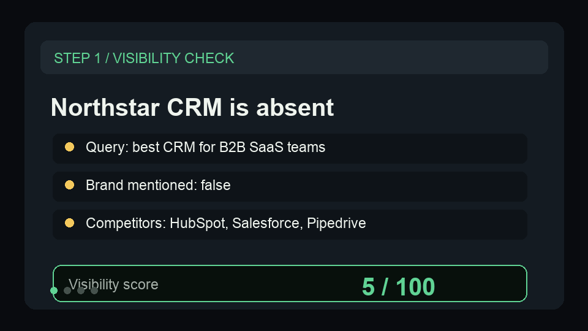

Turn AI visibility checks into a client-ready report.
Use a tiny Northstar CRM sample to show the monitor to report workflow before connecting a live dataset.
{kind=link}
Show the useful report in under a minute.
The sample is intentionally small: one buyer-intent query, a few competitors, and one recommendation that becomes a report section.
Start with visibility checks
Show brand mention, competitors, visibility score, and recommendation fields from the monitor output.
Generate the report
Paste the sample checks or pass a dataset ID into the Report Generator.
Open REPORT.md
Point to the executive summary, scorecard, top competitors, priority gaps, and next actions.
Show the report path before asking for a run.
This short GIF previews the sample input, generated scorecard, competitor table, and next-action report sections buyers get from the first proof run.

A safe sample for quick proof.
Paste this shape into the Store input to verify the report path before wiring a scheduled monitor dataset.
{
"brandName": "Northstar CRM",
"reportPeriod": "May 2026",
"visibilityChecks": [
{
"status": "succeeded",
"brandMentioned": false,
"brandDomainMentioned": false,
"visibilityScore": 5,
"query": "best CRM for B2B SaaS teams",
"modelId": "openrouter/auto",
"competitorsMentioned": [
"HubSpot",
"Salesforce",
"Pipedrive"
],
"recommendation": "Publish comparison and alternatives content for B2B SaaS CRM buyers."
},
{
"status": "succeeded",
"brandMentioned": true,
"brandDomainMentioned": false,
"visibilityScore": 55,
"query": "HubSpot alternatives for product-led sales teams",
"modelId": "openrouter/auto",
"competitorsMentioned": [
"HubSpot"
],
"recommendation": "Strengthen canonical domain citations and publish a direct alternatives page."
}
]
}